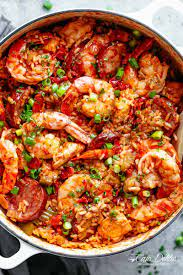

Jambalaya

Description
A spicy jambalaya with chicken, andouille sausage, rice, and Cajun seasonings that's easy to make in one pot.
Ingredients
- Oil
- Sausage
- Chicken
- Seasonings
- Vegetables
- Rice
- Broth
Steps
- Cook the meat: Season the sausage and chicken pieces with Cajun seasoning. Sauté the sausage until browned, then remove with a slotted spoon and set aside. Sauté chicken until lightly browned on all sides. Remove with a slotted spoon and set aside
- Cook the vegetables: In the same pot, sauté the onion, celery, bell pepper, and garlic until tender. Stir in the crushed tomatoes and seasonings. Add the meat and cook for 10 minutes.
- Add the rice: Stir in the rice and chicken broth. Bring to a boil, reduce the heat, and cook until all the liquid is absorbed.
Return to Homepage